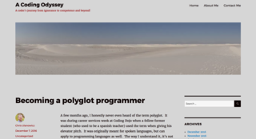
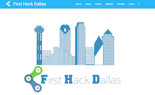
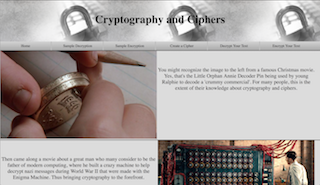
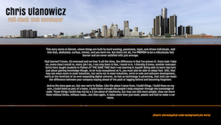
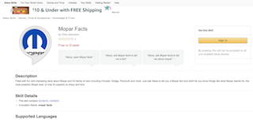
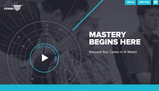
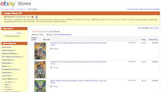

This story starts in Detroit, where things are built by hard-working, passionate, loyal, and driven individuals. Add into that, dedicated, curious, honest, and you have me. But that's not all, I'm a PROVEN fast learner and am never satisfied with just average, always striving to be the best, or as close as I can get.
Fast learner? Yeah, I know, it's overused and we hear it all the time, the difference is that I've proven it. Every task I take on, every class I enroll in, every job I do, I not only learn it fast, I excel in it. I literally (I know, another overused term) have taught students in Python AT THE SAME TIME that I was learning it myself! Being able to learn fast isn't just about gaining knowledge though, to be truly exceptional at it, you must also be able to adapt fast. Still, that may not mean much in most industries, but we're not in most industries, we're in web and software development, we're at the forefront of an ever-expanding digital universe. As fast as technology is advancing, that trait can mean the difference between your company staying ahead of the pack or lagging behind and becoming forgotten.
And so the story goes on, but now we're in Dallas. Like the place I came from, I build things. I build them on my own, I build them as part of a team, I build them through the people I help empower through the knowledge of code. These things I build may not be a 2 ton piece of machinery, but they can still move people, they can move them without limits, without roads...but then again, it takes more than just steel, plastic and fuel to make a car move.
(insert stereotypical code background pic here)
The Technical Know-how
| Languages | C#, Ruby, JavaScript, Python, PHP, and a drop of JAVA |
| Front-End | HTML5, CSS3, Angular.js (1 && 2), jQuery, AJAX, Razor |
| Frameworks | .NET MVC, .NET Core 2.0, DevExpress, Rails, Express.js, Django, Laravel, CodeIgniter, Socket.io |
| Servers/Cloud | Apache, Node.js, Nginx, AWS |
| Databases/ORM | MySQL, PostgreSQL, XPO, Entity Framework Core, SQLite3, MongoDB, Mongoose.js, Active Record |
| Methodology/Testing | OOP, MVC, RESTful Architecture, API, RSpec, Capybara |
| Tools | Visual Studio 2017, VS Code, Chrome Dev Tools, Sublime Text, VIM, Git, GitHub, SSMS, phpMyAdmin, MySQL Workbench, Slack |
Works/Projects
A Coding Odyssey
A blog I started when I first decided to start coding as a career. Originally it was made to chronicle my journey as a coding newb through a coding bootcamp, where I posted almost daily, but has since gone past that. Blog is self-hosted and uses Wordpress as the CMS.
Cobo Grād
A web application for comic book enthusiasts built around the idea of having an automated way to grade comic books. This is something that has been lacking for the longest time, and for good reason. This site is taking something subjective and trying to make it objective. Therefore this aspect is still being developed due to the complexity of the algorithms required to make it work - accurately. The site does also feature a community discussion forum where users can create topics, post and comment. The vision is to also incorporate several API's including eBay, Marvel, Facebook, and Google Maps as I integrate more features.
Cobo Grād is deployed through Amazon EC2 Web Services and built on the full MEAN stack utilizing MongoDB with Mongoose.js, Express.js, Angular.js, and Node.js.

First Hack Dallas
An annual local hackathon for beginner developers with a focus on a project that benefits the local community. As a co-founder and co-organizer, I dealt in all aspects of hosting a hackathon, including acquiring sponsors, recruiting mentors, acquiring supplies, marketing, administrative duties, and most importantly, developing the website as part of a team working in an agile environment. I also took on the role of DevOps Engineer and handled all aspects of deploying the site, pushing live updates, domain management and setting up the e-mail system.
Site is built with Ruby on Rails using PostgreSQL for the database and Materialize as the CSS framework. Git and GitHub is used for version control and it is deployed through AWS EC2 using ubuntu. Email system uses AWS SES and S3 for storage.
Cipher App
Starting out as a Coding Challenge for a potential dev role, this app explores basic cryptography. While doing this challenge, I was having a lot of fun learning about ciphers, so much so that I decided to keep working on it and make it a full-blown project. This app offers an introduction into the basics of cryptography with examples of some simple substitution ciphers. It also allows the user to encrypt messages and create custom ciphers based on a user chosen keyword. Users could then pass along those encrypted messages to friends, who would only need the keyword and using this app, be able to decrypt those messages.
Web app is built with JavaScript using Node.js on the Express.js framework and Angular.js v1.6 on the client side. App is deployed live through AWS EC2 using an ubuntu AMI.
Portfolio
Yes, this Portfolio that you're currently looking at! No templates, no outside designers (I know, hard to believe with how amazing the design is!), no CSS frameworks, just pure, hand-built from scratch awesomeness. Ok, so maybe I didn't hand-build the icons, those are from FontAwesome, but still Awesome!! Thank you, thank you, I'll be here all day!
This site is built with basic HTML5, CSS3 with FontAwesome for the icons and has jQuery plugged in. So the jQuery isn't really doing anything yet, but there is a hidden message in the console, and if you don't know what this 'console' is, hire me and I'll be glad to explain it! This site is hosted through iPage where I work directly in cPanel and handle all hosting duties.
Mopar Facts Alexa Skill
Using my knowledge in JavaScript and working with JSON along with Amazon's Alexa Skill Kit and Template, I created a voice activated app that reads off miscellaneous facts about the iconic Mopar brand. This skill passed Amazon certification, allowing it to be published and is currently available on Amazon for free. If you happen to have an Amazon Echo device, try it out!
Algorithms!
This should really be its own section. I LOVE algorithms! I love the challenge of them and love solving them. Of course I'm no Alan Turing, so I don't always figure the tougher ones out, but that doesn't mean I won't contemplate and try them.
How much do I love algorithms? I try to do at least one algorithm every day. I even have a large whiteboard in my office. Usually I'll solve them in whatever language I'm working with at the time, and when learning a new language re-doing some of the basic algorithms first helps
Education
Coding Dojo - June 2016
A fully immersive 14-week onsite coding bootcamp which teaches 3 full-stacks including LAMP, MEAN, and Ruby on Rails. Putting roughly 1100 hours of coding into the program, I was able to graduate with highest honors, earning a Triple Black Belt with perfect 10 out of 10 scores in each stack.
In addition to teaching 3 full-stacks, Coding Dojo is also known for incorporating daily whiteboard algorithm challenges, giving students experience in working with various data structures including arrays, linked lists, stacks, queues, binary search trees, hashes, sorts, and recursive functions.
United States Air Force
Kicking off what was easily the proudest period of my life, I decided to join the United States Air Force in 1998. Originally trained to work on the F-16 Falcon Fighter Jet, I quickly rose to the top of my class and was selected to become part of an elite team of maintainers on the F-117 Stealth Nighthawk.
Coming out of technical training I earned the AETC Commander's Award, which is only given to the best of the best of graduates. In addition to maintaining critical systems on the F-117, I was assigned to the base emergency crash recovery team and was selected to be a key member of the base mobility unit, ready to deploy at a moment's notice. Receiving only stellar performance reviews, I was put up for BTZ (Below-the-Zone) early promotion by my superiors and ended my active duty service with an Honorable Discharge.
Although my security clearance has long-expired, I did hold a SECRET level clearance and would still be considered 'clearable'.
Lucky Penny
This is a business that I've owned since 2013 that deals in mostly e-commerce. As this was a small business, I oversaw all aspects of it, from buying to selling and everything in-between. Through this business I've become a pro at using various web applications and software including eBay, Amazon, 5miles, OfferUp, and Craigslist. I also had to manage the domain on my own as well as setting up and managing the email client.
The business is still going so feel free to check out my eBay store, maybe buy something, but most importantly, take a peek at my feedback. The service that's required to achieve my 100% PERFECT feedback rating is exactly what you can expect out of me in any work that I do.
Dziękuję
That means 'Thank You' in Polish, which I am and can speak. You never know when having someone on your team who can speak Polish will come in handy. I also chose that word because I want to say Thank You for taking the time to read through my portfolio page.